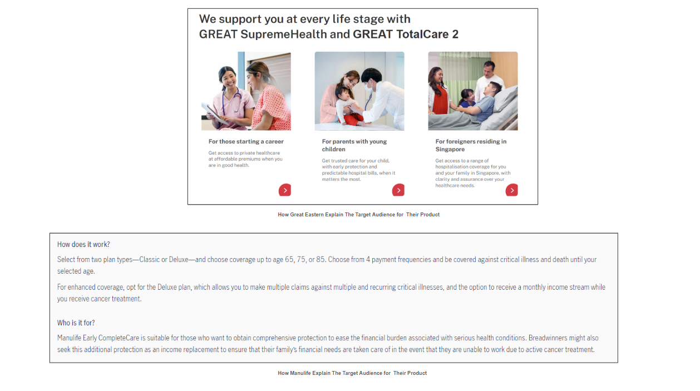

Pages that do not yet speak to buyers or to AI
The product pages describe plans well, but they rarely frame who the plan is for, and AIA publishes very little educational content where most new buyers start.
The critical illness page describes the plan, but it never frames the audience or the life situation the plan suits. Competitors do this well. Great Eastern and Manulife both spell out who their products are for on the page itself.
- https://www.aia.com.sg/en/our-products/health/critical-illness/aia-protect-3
- https://www.greateasternlife.com/sg/en/personal-insurance/our-products/health-insurance/great-supremehealth-main.html
- https://www.manulife.com.sg/en/solutions/health/critical-illness/manulife-early-completecare.html
How competitors do it. Great Eastern frames the same product around life stages, "for those starting a career", "for parents with young children", and "for foreigners residing in Singapore". Manulife adds a plain "Who is it for" section that names the audience directly. Both make it obvious to a reader, and to an AI, exactly which person each plan suits.

When someone asks an AI assistant "I just graduated and started my first job, what insurance should I get," the assistant looks for pages that clearly connect a product to a person and a moment. Without that context, AIA loses the discovery opportunity even when its product is the right one.
Add clear audience and life situation context to every product detail page, so both search engines and AI can match the page to real questions.
The title on the enhanced cancer protection page reads "AIA Enhanced Cancer Protect | Critical Illness Insurance | AIA Singapore," which leads with the internal product name rather than the benefit a buyer searches for. A title closer to "Critical Illness Insurance for Cancer Protection: 100% Coverage | AIA Singapore" would speak to intent. This compounds with a wider gap: 292 pages, about 42 percent of the site, have no meta description at all, including 56 product pages.
- https://www.aia.com.sg/en/our-products/health/critical-illness/aia-enhanced-cancer-protect
The right title and description help search engines and AI understand the product and make it easier to discover. A missing description leaves the platform to guess what to show.
Revisit titles, meta descriptions, and headings on the product pages together, in consultation with the internal team, since product naming often involves compliance.
AIA publishes very little content that teaches a buyer how to choose insurance. Its single best non branded asset is one educational guide, the "5 types of insurance you should get in Singapore" article, which ranks on the first page for "life insurance," a term searched around 112,000 times a month, and is the most cited AIA page in AI answers today.
In the article space, roughly 90 percent of readers are new visitors who do not yet know which brand they want. That makes articles one of the most effective ways to bring in high intent, relevant audiences and turn them into leads. One good article is already doing the work of dozens of product pages.
Build an educational article engine that targets high volume non branded questions, modeled on the success of the existing guide.